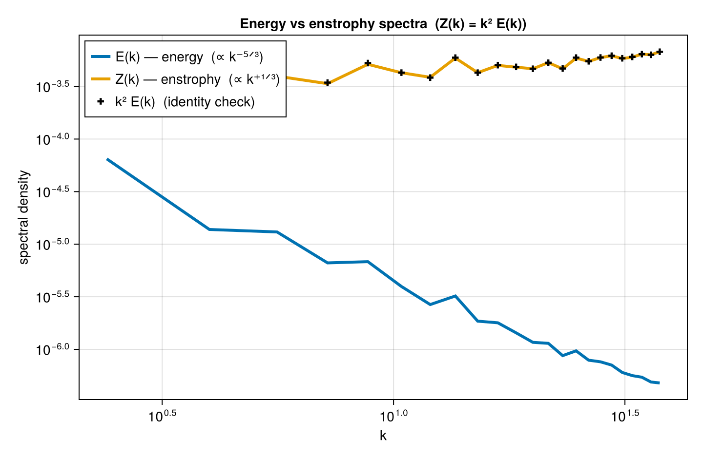

Derived-quantity spectra (vorticity, divergence, enstrophy)
FlowFieldSpectra forms the kinetic-energy spectrum from a velocity field; the same machinery, via spectral differentiation (ik^α), gives the spectra of vorticity, divergence, and enstrophy. To show the canonical relationship we use a synthetic incompressible turbulent flow with a Kolmogorov k⁻⁵ᐟ³ energy cascade — for which the enstrophy spectrum is Z(k) = k² E(k) ∝ k⁺¹ᐟ³.
using FlowFieldSpectra: FlowFieldSpectra as FFS
using FFTW: FFTW # activates the FFTBackend extension
using CairoMakie: CairoMakie as Mke
import Random
L = 2π
N = 128
dx = L / N
xs = range(0.0, stop = L - dx, length = N)
xv = vec([x for x in xs, y in xs])
yv = vec([y for x in xs, y in xs])
# Synthetic incompressible turbulence: build a broadband streamfunction ψ, then derive the
# velocity by spectral differentiation u = ∂ψ/∂y, v = -∂ψ/∂x (so ∇·u = 0 by construction).
# ψ's slope is chosen so the velocity energy follows a k⁻⁵ᐟ³ cascade.
Random.seed!(1)
freq = [0:(N ÷ 2 - 1); -(N ÷ 2):-1] .* (2π / L) # FFTW-order wavenumbers
ψ̂ = FFTW.fft(randn(N, N))
for j in 1:N, i in 1:N
k = hypot(freq[i], freq[j])
ψ̂[i, j] *= k == 0 ? 0.0 : k^(-(11 / 3 + 1) / 2)
end
u = vec(real(FFTW.ifft([im * freq[j] * ψ̂[i, j] for i in 1:N, j in 1:N])))
v = vec(real(FFTW.ifft([-im * freq[i] * ψ̂[i, j] for i in 1:N, j in 1:N])))
grid = FFS.UniformCartesianGrid((xv, yv); domain_size = (L, L))
coeffs, ks = FFS.calculate_spectrum(FFS.FFTBackend(), grid, (u, v), (N, N))
# Spectral operators: divergence ≈ 0 (incompressible); vorticity → enstrophy spectrum.
divc = FFS.spectral_divergence(ks, coeffs)
vortc = FFS.spectral_vorticity(ks, coeffs)
@show maximum(abs, divc) # ~machine epsilon: the field is divergence-free
k, E = FFS.isotropic_spectrum(ks, coeffs; num_bins = 40)
_, Z = FFS.isotropic_spectrum(ks, vortc; num_bins = 40)
rng = 2:findlast(<=(0.6 * maximum(k)), k) # resolved inertial range
fig = Mke.Figure(size = (720, 470))
ax = Mke.Axis(fig[1, 1]; title = "Energy vs enstrophy spectra (Z(k) = k² E(k))", xlabel = "k",
ylabel = "spectral density", xscale = log10, yscale = log10)
Mke.lines!(ax, k[rng], E[rng]; linewidth = 3, label = "E(k) — energy (∝ k⁻⁵ᐟ³)")
Mke.lines!(ax, k[rng], Z[rng]; linewidth = 3, label = "Z(k) — enstrophy (∝ k⁺¹ᐟ³)")
Mke.scatter!(ax, k[rng], k[rng] .^ 2 .* E[rng]; color = :black, marker = :cross,
label = "k² E(k) (identity check)")
Mke.axislegend(ax; position = :lt)
fig
E(k) and Z(k) are well-separated power laws with opposite slopes, and the k² E(k) markers fall exactly on the directly-computed enstrophy Z(k) — the Z = k²E identity, a validation cross-check for the spectral-curl operator on an incompressible field.